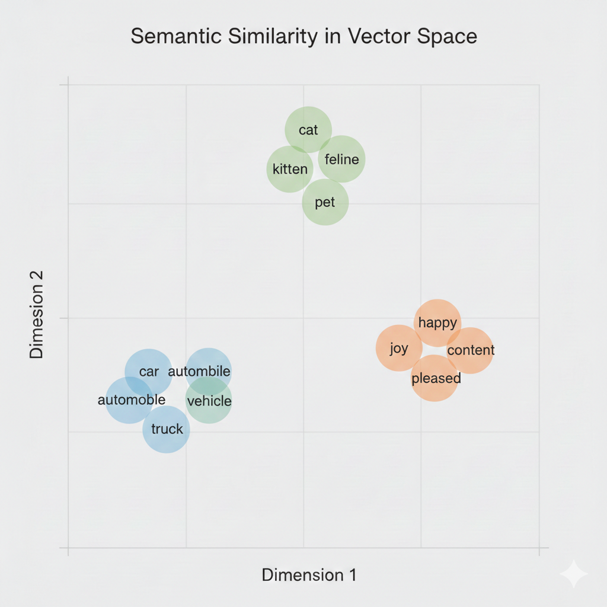
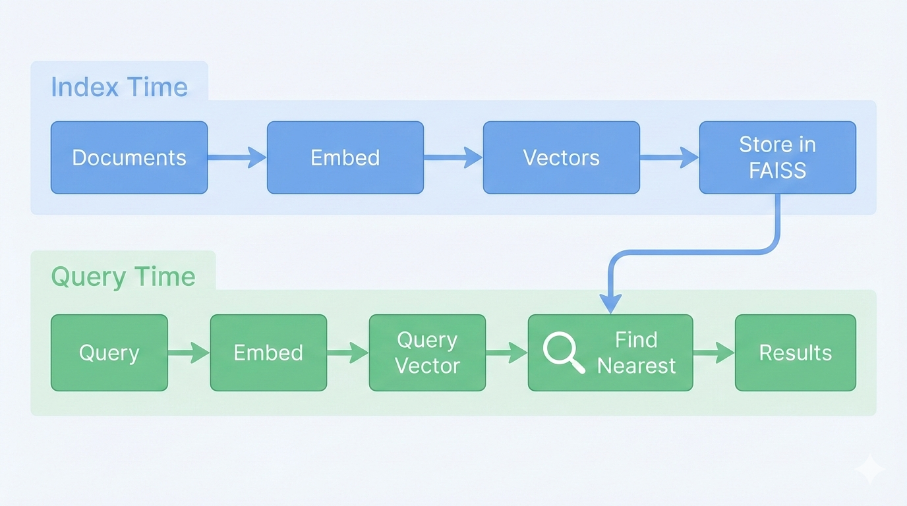
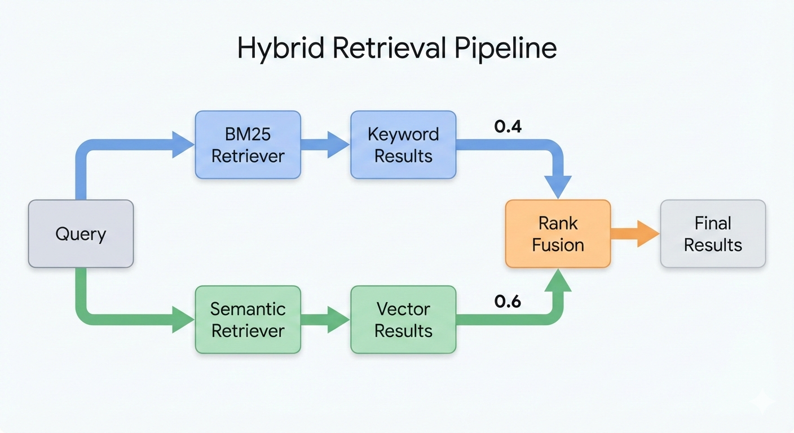

2026-02-24
GoogleGenerativeAIEmbeddings and FAISSEnsembleRetrieverFrom deck 06, we built a retriever using BM25:
BM25 matches documents containing the exact query terms.
BM25 struggles when users use different words than the documents:
| User asks about… | Document says… | BM25 finds it? |
|---|---|---|
| “car” | “automobile” | ❌ No |
| “happy” | “joyful” | ❌ No |
| “purchase” | “buy” | ❌ No |
| “error handling” | “exception management” | ❌ No |
Keywords must match exactly–a fundamental limitation.
An embedding is a list of numbers (a vector) that represents the meaning of text.
The embedding model learns these representations from massive text datasets.

Words with similar meanings cluster together in embedding space.
In deck 02, we saw that LLMs use token embeddings internally:
| Token embeddings (deck 02) | Text embeddings (today) |
|---|---|
| One vector per token | One vector for entire text |
| Internal to the model | Standalone output |
| Enables next-token prediction | Enables similarity search |
Today’s embeddings compress an entire sentence or paragraph into one vector.
Modern embedding models (Gemini, OpenAI, etc.) follow a two-stage approach:
1. Start from LLM — Adapt and initialize from pre-trained LLM weights
2. Fine-tune with contrastive learning — Train on text pairs to optimize for similarity
During pre-training, LLMs learn rich representations of language:
Starting from these learned representations means the embedding model doesn’t have to learn language from scratch.
To create an embedding model from an LLM:
Example: “The bank was steep”
When computing the representation for “bank”:
Unidirectional: “bank” only attends to [“The”, “bank”] — can’t see “was steep”
Bidirectional: “bank” attends to all tokens — sees “steep” → river bank
With “The bank was closed”, bidirectional sees “closed” → financial bank.
For embeddings, full context from both directions helps capture meaning.
The model learns from pairs of texts:
The model learns by contrasting similar and dissimilar examples.
Adjust model weights to:
After training on millions of pairs, the model learns general patterns of semantic similarity — not just the specific examples it saw.
Where do the training pairs come from?
| Source | Example pair |
|---|---|
| Web corpus | Page title ↔︎ page content |
| Synthetic (LLM-generated) | LLM writes a question for a given passage |
| Search logs | Query ↔︎ clicked result |
| Paraphrases | “Great movie” ↔︎ “Excellent film” |
Gemini Embedding uses billions of web pairs plus synthetic data generated by prompting Gemini to create queries for passages.

Index time: Embed all document chunks and store vectors. Query time: Embed query and find nearest stored vectors.
How do we find “nearest” vectors? Cosine similarity:
\[\text{similarity} = \frac{\vec{a} \cdot \vec{b}}{|\vec{a}| \times |\vec{b}|}\]
Find the vectors with highest cosine similarity to our query.
| Aspect | BM25 (Keyword) | Semantic (Embedding) |
|---|---|---|
| Matches | Exact terms | Meaning/concepts |
| “car” finds “automobile”? | ❌ No | ✅ Yes |
| Handles typos? | ❌ No | ✅ Often |
| Exact phrase match? | ✅ Strong | ⚠️ Weaker |
| Speed | Very fast | Fast (with index) |
| Requires | Just text | Embedding model |
GOOGLE_API_KEY as ChatGoogleGenerativeAIFAISS (Facebook AI Similarity Search) stores and searches vectors efficiently:
FAISS automatically:
embeddings.embed_documents() on all chunksNote
FAISS is available as faiss-cpu or faiss-gpu depending on your hardware.
The as_retriever() method returns a retriever with the standard .invoke() interface.
Key insight: You can swap BM25 for semantic search with minimal code changes.
from langchain_community.document_loaders import DirectoryLoader, TextLoader
from langchain_text_splitters import RecursiveCharacterTextSplitter
from langchain_google_genai import GoogleGenerativeAIEmbeddings
from langchain_community.vectorstores import FAISS
# 1. Load documents (same as deck 06)
loader = DirectoryLoader("./docs", glob="**/*.txt", loader_cls=TextLoader)
documents = loader.load()
# 2. Split into chunks (same as deck 06)
splitter = RecursiveCharacterTextSplitter(chunk_size=1000, chunk_overlap=100)
chunks = splitter.split_documents(documents)
# 3. Create embeddings and vector store (NEW)
embeddings = GoogleGenerativeAIEmbeddings(model="models/gemini-embedding-001")
vectorstore = FAISS.from_documents(chunks, embeddings)
semantic_retriever = vectorstore.as_retriever(search_kwargs={"k": 3})Semantic wins:
BM25 wins:

Hybrid retrieval runs both retrievers and merges the results.
from langchain_classic.retrievers import EnsembleRetriever
from langchain_community.retrievers import BM25Retriever
# Create both retrievers
bm25_retriever = BM25Retriever.from_documents(chunks, k=3)
semantic_retriever = vectorstore.as_retriever(search_kwargs={"k": 3})
# Combine with weights
hybrid_retriever = EnsembleRetriever(
retrievers=[bm25_retriever, semantic_retriever],
weights=[0.4, 0.6] # 40% BM25, 60% semantic
)
results = hybrid_retriever.invoke("refund policy")The weights control relative importance of each retriever’s results.
langchain_classicEnsembleRetriever lives in langchain_classic—a legacy package maintained until Dec 2026.
It provides built-in Reciprocal Rank Fusion (RRF), which we’ll see next.
The modern alternative is RunnableParallel from langchain_core with manual RRF—more flexible but more code.
EnsembleRetriever uses Reciprocal Rank Fusion (RRF):
\[\text{RRF}(d) = \sum_{r \in \text{retrievers}} \frac{w_r}{\text{rank}_r(d) + k}\]
The constant \(k\) (default=60) prevents top-ranked items from dominating.
| Use case | BM25 weight | Semantic weight |
|---|---|---|
| Technical docs with exact terms | 0.6 | 0.4 |
| General Q&A | 0.4 | 0.6 |
| Code search | 0.7 | 0.3 |
| Conversational queries | 0.3 | 0.7 |
Note
These are example starting points, not proven values. Experiment and adjust based on your documents and query patterns.
In deck 06, we built a document Q&A agent with BM25:
To upgrade to hybrid search, we change one line:
The tool definition and LangGraph structure stay exactly the same.